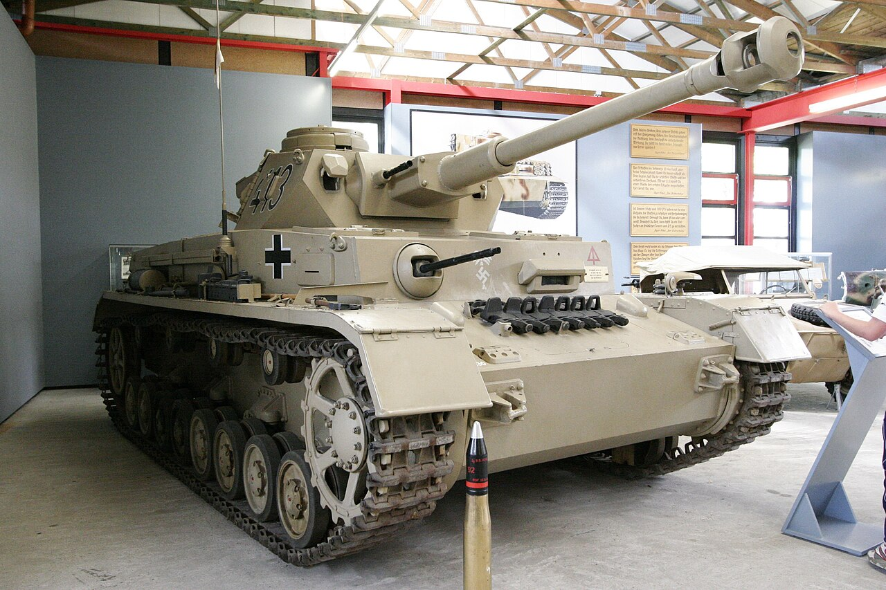
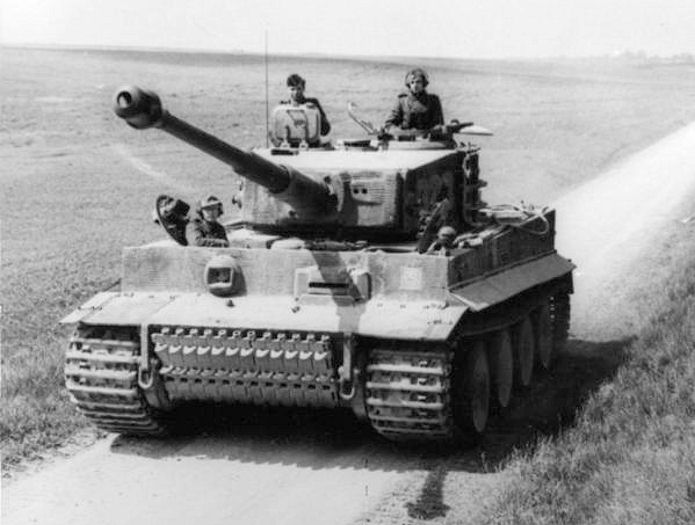
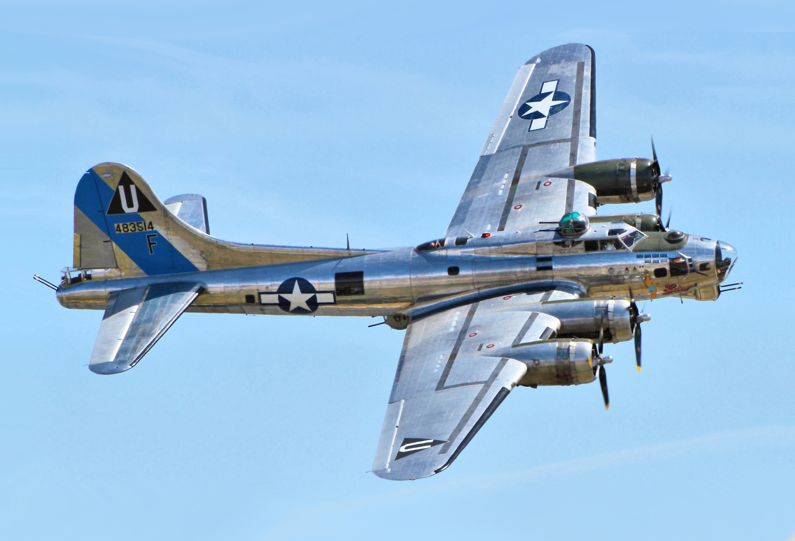
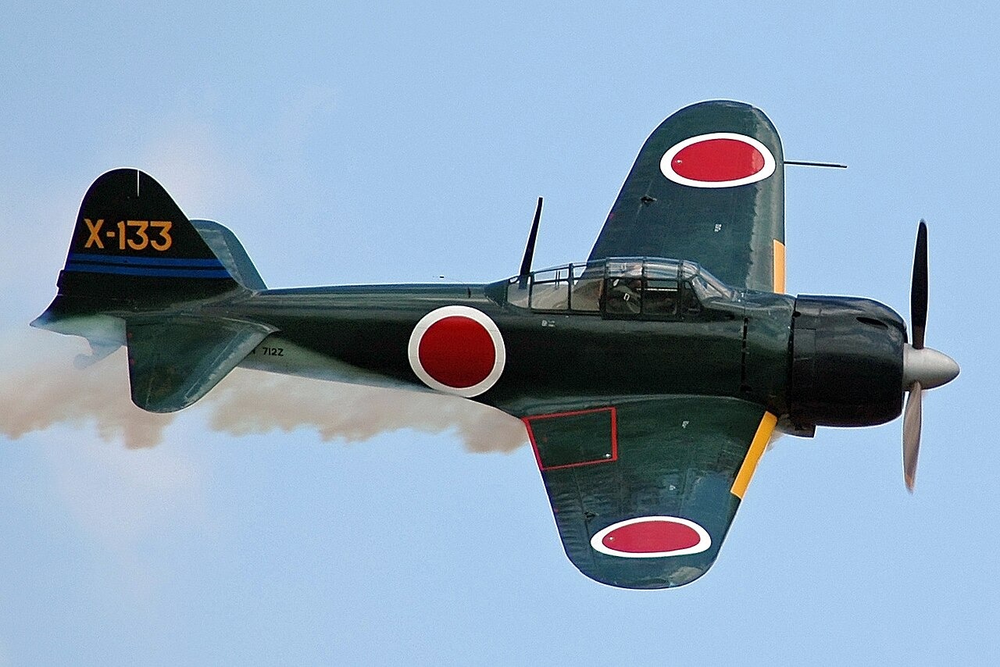
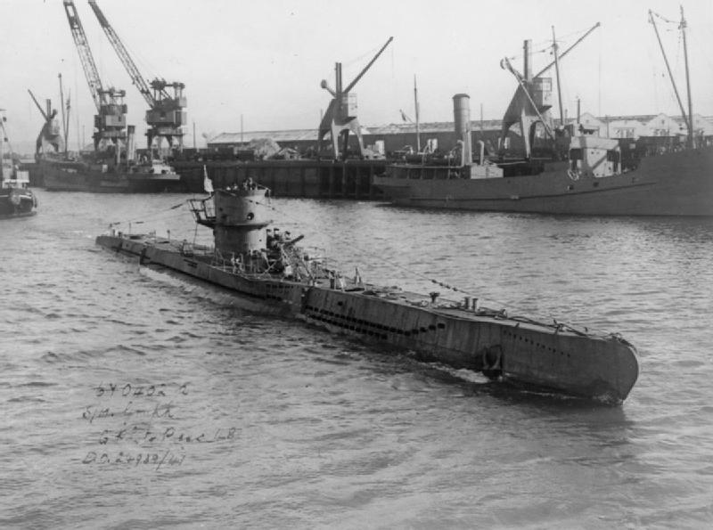

Druhá světová válka byla obrovským motorem technologického pokroku. Za pouhých 6 let se tanky, letadla i lodě změnily k nepoznání. Některé vynálezy z té doby – radar, rakety, počítače – ovlivňují náš svět dodnes. Na téhle stránce najdete přehled nejdůležitější techniky.
🛡️ Tanky
Tanky byly páteří pozemních bojů. Na začátku války byly relativně slabé, ale do roku 1944 šlo o obrovské obrněné stroje se silnými děly. Klíčová byla kombinace pancéřování, výzbroje a rychlosti.

🇩🇪 Panzer IV – Německo
Panzer IV byl nejrozšířenější německý tank celé války. Byl nasazen na všech frontách od Polska až po Normandii a prošel řadou vylepšení. Byl spolehlivý a všestranný – proto ho Němci vyráběli po celou válku.
| Hmotnost | 25 tun |
| Kanon | 75 mm |
| Rychlost | 42 km/h |
| Posádka | 5 mužů |

🇩🇪 Tiger I – Německo
Tiger byl noční můrou spojeneckých tankistů. Měl silné pancéřování a mocné 88mm dělo, které dokázalo zničit každý nepřátelský tank. Byl ale drahý a poruchový – Německo jich vyrobilo jen 1 347 kusů, zatímco T-34 bylo přes 84 000.
| Hmotnost | 57 tun |
| Kanon | 88 mm |
| Rychlost | 45 km/h |
| Vyrobeno | 1 347 kusů |

🇷🇺 T-34 – Sovětský svaz
T-34 je pravděpodobně nejlepší tank druhé světové války z hlediska poměru cena/výkon. Skloněné pancíře odrážely střely, široké pásy jezdily v bahně i sněhu a Sověti ho vyráběli masově. Přečíslil každý tank Osy. Byl jednoduchý, rychlý a levný na výrobu.
| Hmotnost | 32 tun |
| Kanon | 85 mm |
| Rychlost | 55 km/h |
| Vyrobeno | přes 84 000 kusů |

🇺🇸 M4 Sherman – USA
Sherman byl hlavní tank americké armády. Technicky nebyl nejlepší – Tiger ho přestřelil na velké vzdálenosti – ale byl spolehlivý, snadno opravitelný a hlavně ho bylo ohromně moc. Americký průmysl ho vyráběl jako na běžícím pásu.
| Hmotnost | 31 tun |
| Kanon | 76 mm |
| Rychlost | 48 km/h |
| Vyrobeno | přes 49 000 kusů |
✈️ Bojová letadla
Ovládnutí vzdušného prostoru bylo naprosto klíčové. Bez vzdušné nadvlády nemohla žádná velká pozemní nebo námořní operace uspět. Proto všechny strany investovaly obrovské prostředky do letectva.

🇬🇧 Supermarine Spitfire – Británie
Ikona britského letectva. Elegantní stíhačka s eliptickými křídly a výkonným motorem Merlin. Spitfire bránil britské nebe v Bitvě o Británii a sloužil po celou válku. Je to jedno z nejkrásnějších letadel války.
| Max. rychlost | 594 km/h |
| Vyrobeno | 20 351 kusů |

🇩🇪 Messerschmitt Bf 109 – Německo
Nejúspěšnější stíhačka války z hlediska sestřelených nepřátel. Na tomhle letadle létal třeba Erich Hartmann – světový rekordman se 352 sestřely. Byl rychlý, obratný a neustále modernizovaný.
| Max. rychlost | 640 km/h |
| Vyrobeno | 33 984 kusů |

🇺🇸 Boeing B-17 Flying Fortress – USA
Létající pevnost. Americké B-17 létaly ve velkých formacích přes den nad Německem a bombardovaly továrny. Mortalita posádek byla děsivá, ale strategické bombardování Německo postupně oslabovalo.
| Max. rychlost | 462 km/h |
| Nosnost bomb | 7 800 kg |
| Posádka | 10 mužů |

🇯🇵 Mitsubishi A6M Zero – Japonsko
Na začátku války v Pacifiku neměl Zero soupeře – byl neuvěřitelně obratný a měl velký dolet. Jenže pilot nebyl skoro vůbec pancéřovaný. Jakmile Spojenci přišli s lepšími stíhačkami, Zero rychle zastaral.
| Max. rychlost | 533 km/h |
| Vyrobeno | 10 939 kusů |
⚓ Lodě a ponorky

🇩🇪 Bismarck – Německo
Největší německá bitevní loď. Při prvním výjezdu v květnu 1941 potopila britský křižník Hood. Celá britská flotila ji pak honila – zasáhla ji torpédy a Bismarck byl potopen vlastní posádkou, aby nepřipadl nepříteli.
| Výtlak | 52 600 tun |
| Hlavní výzbroj | 8× 380 mm |
| Posádka | 2 092 mužů |

🇩🇪 Ponorka U-Boot – Německo
Německé ponorky téměř udusily Británii odříznutím zásobovacích tras přes Atlantik. V roce 1942 potápěly lodě rychleji, než je šlo stavět. Útočily ve smečkách – skupinách ponorek. Boj s nimi – Bitva o Atlantik – trval celou válku.
| Rychlost pod vodou | 8 uzlů |
| Hloubka ponoru | až 230 m |
💡 Převratné vynálezy
Válka neuvěřitelně urychlila technologický pokrok. Níže jsou věci, které válka přinesla nebo zdokonalila – a mnoho z nich ovlivňuje svět dodnes.
⚡ Radar
Britský radar byl jedním z klíčových faktorů vítězství v Bitvě o Británii. Síť radarových stanic varovala RAF před přibližujícími se německými letadly desítky minut dopředu. RAF pak nemusel neustále hlídkovat ve vzduchu, ale mohl vzlétnout ve správnou chvíli. Radar se dnes používá v letecké dopravě, meteorologii i námořnictví.
🔐 Enigma a Alan Turing
Německý šifrovací stroj Enigma generoval kódy, které byly považovány za neprolomitelné. Britský matematik Alan Turing a jeho tým v Bletchley Parku vytvořili stroj Bombe, který kódy systematicky lámal. Přístup k německým zprávám (projekt Ultra) zkrátil válku odhadem o 2 až 4 roky. Turing je dnes považován za zakladatele moderní informatiky. Po válce ho britský stát tragicky pronásledoval za homosexualitu a zemřel v roce 1954 – v roce 2013 mu byla udělena posmrtná milost.
🚀 Raketa V-2
V-2 (Vergeltungswaffe 2) byla první balistická raketa světa. Navrhoval ji tým Wernhera von Brauna. Dosahovala výšky přes 80 km – technicky za hranicí vesmíru. Zasahovala Londýn a Antverpy bez šance na obranu, protože letěla příliš rychle. Po válce technologie V-2 sloužila jako základ amerického i sovětského kosmického programu – von Braun nakonec pracoval pro NASA.
| Dolet | 320 km |
| Rychlost | 5 760 km/h |
| Výška letu | přes 80 km |
☢️ Atomová bomba – Projekt Manhattan
Projekt Manhattan byl tajný americký program na vývoj atomové bomby. Pod vedením fyzika Roberta Oppenheimera na tom pracovaly tisíce vědců v Los Alamos. 6. srpna 1945 bomba Little Boy srovnala Hirošimu se zemí – zemřelo přibližně 140 000 lidí. 9. srpna druhá bomba zasáhla Nagasaki. Japonsko kapitulovalo a válka skončila. Atomová éra začala – a svět se navždy změnil.
| Síla výbuchu (Little Boy) | 15 kilotun TNT |
| Oběti v Hirošimě | ~140 000 do konce roku 1945 |
| Oběti v Nagasaki | ~80 000 do konce roku 1945 |
✈️ Proudové letadlo – Me 262
Messerschmitt Me 262 byl první bojový proudový letoun v historii. Byl o 150 km/h rychlejší než jakákoliv spojenecká stíhačka. Hitler ho ale dlouho odmítal nasadit jako stíhačku a trval na jeho použití jako bombardéru. Byl nasazen příliš pozdě a v malém počtu, aby mohl změnit průběh války.
| Max. rychlost | 900 km/h |
| Vyrobeno | 1 430 kusů |